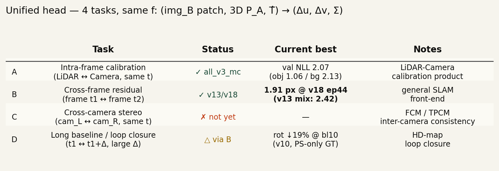

roadmap●
one residual head, four applications
一つの残差ヘッドで、
キャリブ / SLAM / ステレオ / ループクロージャを解く
LiDAR と Camera、任意の2つの観測を ― 何の観測かをモデルに 教えずに ― 「3D 点が別観測のどこに映るか」を per-point (Δu, Δv, Σ) として返す単一のヘッドで統一する計画。同じ関数、同じ forward、 4 つのプロダクト応用。
共通ヘッド
f : (image_B patch, 3D point P_A, hypothesis pose T̂_AB) → (Δu, Δv, Σ)
Σ は 2×2 共分散(uv のみ)、または 3×3(uvd、v12 以降)。 f は「A と B が何か」を知らない。 データローダーが A と B を物理的に何と対応させるかだけで タスクを切り替える。ネットワークのコードは同じ。
4 つのタスクと応用

| Task | A における入力 | B における入力 | T の意味 |
|---|---|---|---|
| A intra-frame calibration | LiDAR(t) | Camera(t) ※ patch_A と patch_B は同じ画像 | LiDAR → Camera 外部パラメータ |
| B cross-frame residual | Cam(t₁) or LiDAR(t₁) | Cam(t₂) | ego-motion × 外部 = 2 フレーム間の相対 pose |
| C cross-camera stereo | Cam_L(t) + LiDAR 深度 | Cam_R(t) | ステレオ baseline |
| D long baseline / loop closure | Cam(t₁) | Cam(t₁ + Δt), Δt 大 | 長距離 ego-motion、scene 変化あり |
応用の割り当て
- A → LiDAR↔Camera calibration 製品: 現場で一度キャリブを取る/更新するときに。 新しいセンサ組合せでも zero-shot で動くことが本件の勝ち筋。
- B → 汎用 SLAM フロントエンド: VO / 短距離 pose tracking の残差源。 σ 重みがそのまま BA のマハラノビスとして下流 solver に流れる。
- C → FCM / TPCM 製品 カメラ間整合: 同時刻の 2 カメラ一貫性チェック。 LiDAR を介さずカメラ同士を直接照合する構成も可。
- D → 超高精度地図の loop closure: 数分〜数時間離れた pass を照合。 大きな σ を許容して BA へ流し、地図ドリフトを抑える。
アーキテクチャ: forward は同一、データだけが変わる
forward (CalibNetCrossFrame — models/cross_frame.py):
patch_A ──CNN(shared)──► img_tok_A ┐
patch_B ──CNN(shared)──► img_tok_B ┤
│ cross-attn
uvd_A ─ PointMLP + frustum ─► Q ───┴──► Q attends to img_tok_B
│
▼
(Δu, Δv, Σ) per query, in B-pixel
pose_emb(T̂) → 仮説ポーズを 6-DoF で query に concat
intra-block SA → 点間 self-attn
dual training → (A→B) と (B→A) を対称に学習、残差は symmetric
タスク分岐は Pair Dataset が何を patch_A/patch_B/uvd_A/T̂ に詰めるか だけ。モデルは分岐を知らない。 pose_emb の仮説 pose が意味的に何か(外部パラメータ or ego-motion or ステレオ変換) はネットワーク的には等価。
なぜ統合が成立するか:
幾何公式は共通。画像から特徴を引く処理も共通。
唯一タスク固有なのは 入力の組み立て方 と σ の分布。
前者はデータローダーで吸収、後者は必要なら task_id 埋め込みを
pose_emb に連結するだけ。重み共有のメリットは大きい:
例えば calibration のデータで学んだ「LiDAR 点と画像特徴の対応付け」の
能力が、そのまま cross-frame の初期動作を決める。
現状: どこまで動いている
タスク別の到達点
- A intra-frame calib: 旧ヘッド
CalibNetDepth(experiments/all_v3_mc/) で val NLL 2.07 (obj 1.06 / bg 2.13)。 新ヘッドには統合されていない — これが最初の統合対象。 - B cross-frame:
CalibNetCrossFrame(experiments/cross_frame_v13_mix/〜v18_more_visits/)。 PandaSet 39 + Waymo 80 混合、UVD 対応、現在 v18 が 1.91 px (v13 比 21% 改善) を叩き出して学習中。train/val gap も 1.40 → 0.74 px に半減。 - C cross-camera stereo: 未着手。 データ生成スクリプトを書くだけ。
- D loop closure: B の拡張で既にカバー (baseline 1-60 frame まで eval 済み)。 真の loop closure(別 drive 間)は未テスト。
B の v18 結果が示したこと
- 1 フレームあたりの訪問回数を 25 → 125 に増やした (virtual_epoch 4000 → 20000)だけで、val err 2.42 → 1.91 (21% 改善)。
- 過学習(train/val gap)は 半減。 「scene memorization で σ が overconfident」だった状態が緩和された。
- つまり v13/v15/v16/v17 の段階で overfit が主要ボトルネックで、 データをもっと見せれば mean も σ も揃って改善する余地があった。
- σ キャリブレーション(z = err/σ)は学習完了後に再測定。 σ 絶対値も縮まっているかは要確認。
ロードマップ
前提: 手法の独自性は moat にならない。
Moat は自社データを流し込んで cm 級 pose と密 3D 地図を毎日更新する
パイプライン。以下はそのパイプラインを 4 タスクで回すための
最短工程。
| Milestone | 内容 | 見積 |
|---|---|---|
| M0 | v18 完走、σ-distribution 測定、BA 3D の再評価(現在進行中) | 今日 |
| M1 | PandaSetCalibPair 新規 — A タスクを CalibNetCrossFrame の
入力形式に合わせる。sample dict 共通化。 |
1 day |
| M2 | MixedPairDataset + --mix-spec — 複数タスクを
重み付きでサンプル。 |
½ day |
| M3 | A + B 混合学習(v19_ab_mix)、per-task val err / σ 測定。
A の旧ヘッド結果と直接比較。 |
½ day |
| M4 | C stereo pair の実装、3 タスク混合(v20_abc_mix)。
task_id 埋め込みの有無で ablation。 |
1 day |
| M5 | 会社データ adapter (CompanyCalibPair)。
GICP-refined pose で sub-px 評価、ここで初めて真の精度が見える。 |
2-3 days |
| M6 | D loop closure の専用評価 — 同じ街・別 drive のペアで pose 復元。 | 1 day |
合計 5-6 営業日。M5 が済んだ時点で、プロダクト側(calibration 製品・ SLAM フロントエンド・FCM/TPCM・地図 loop closure)が 単一の学習済みヘッドを共有する体制に入る。
懸念とリスク
- σ overfit: v18 で大きく緩和したが z = err/σ はまだ 要再測定。混合学習で再燃する可能性あり。 軽い対策は σ post-hoc rescale (10 行)、重い対策は σ ヘッドの Dropout / weight decay。
- pose GT 品質: PandaSet / Waymo の公開 GT は 系統誤差 sub-px 〜 0.5°。サブピクセル精度の評価が pose GT で頭打ち。 M5 で会社 GICP データに乗り換えないと真の精度は測れない。
- task 間の σ 分布差: calib の σ と cross-frame の σ は実運用条件が違うので分布が違う。task_id 埋め込みで吸収可能だが 試していない。
- NuScenes の再投入: 2 Hz で baseline 解像度が 合わないため保留中。sweep データ(20 Hz LiDAR / 12 Hz Cam)を使って 10 Hz 相当に再サンプルすれば統合可能。
関連レポート
05. Cross-frame residual net —
B タスクの詳報、σ 楕円可視化、BA+LLN 評価。
02. Bilingual writeup — A タスク (旧ヘッド CalibNetDepth) の初報。
03. Multi-frame BA sweep — 下流 BA の感度解析。
04. Deformable cross-attn — attention 機構の効率化、現ヘッドの内部。
02. Bilingual writeup — A タスク (旧ヘッド CalibNetDepth) の初報。
03. Multi-frame BA sweep — 下流 BA の感度解析。
04. Deformable cross-attn — attention 機構の効率化、現ヘッドの内部。